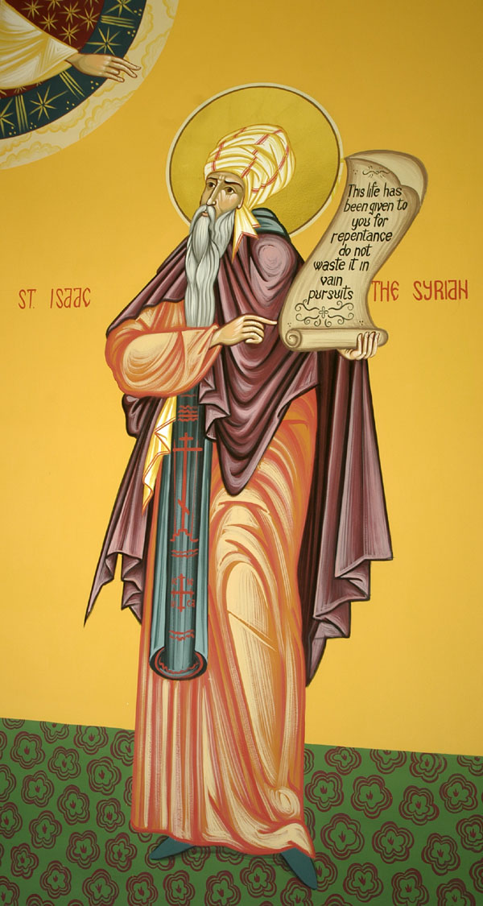
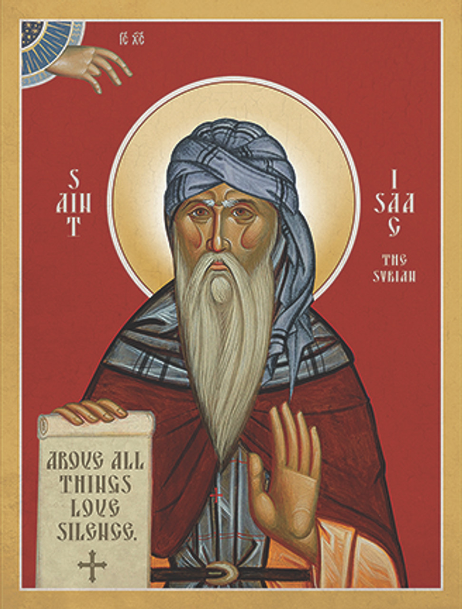
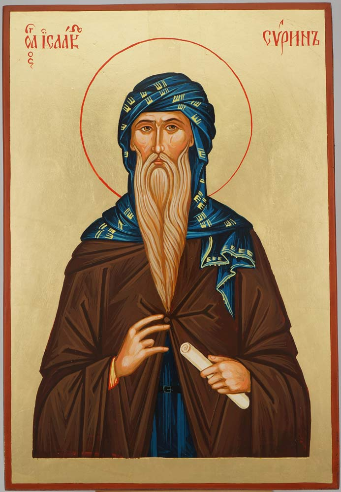
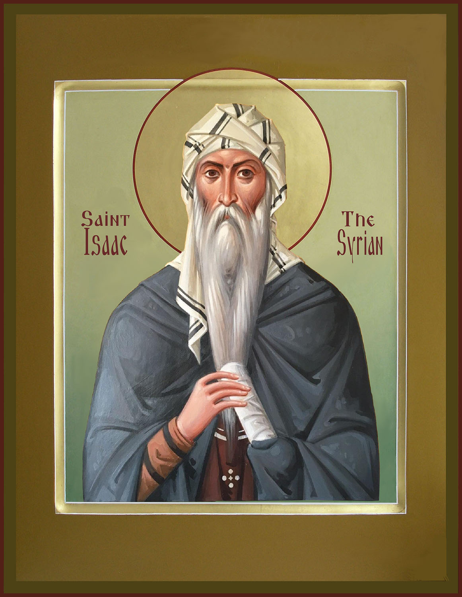
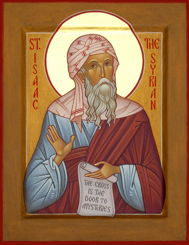

Saint Isaac the Syrian is a 7th century monk and theologian known for his strict asceticism and ascetic
writings, the most famous being his Ascetical Homilies.

Some Icons and quotes of him

"This life has been given to you for repentance; do not waste it in vain pursuits."

"The man who follows Christ in solitary mourning is greater than he who praises Christ amid the
congregation of men."

"Why do you trouble yourself in a house that is not your own? Let the sight of a dead man be a teacher
for you concerning your departure from hence."

"True wisdom is gazing at God. Gazing at God is silence of the thoughts. Stillness of mind is tranquillity
which comes from discernment."
Be persecuted, rather than be a persecutor. Be crucified, rather than be a crucifier. Be treated unjustly,
rather than treat anyone unjustly. Be oppressed, rather than zealous. Lay hold of goodness, rather than justice.
- Saint Isaac the Syrian
Call to action! It's time!
Sign up for our product by clicking that button right over there!